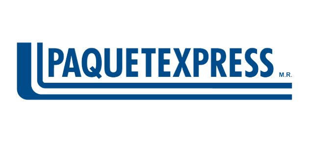
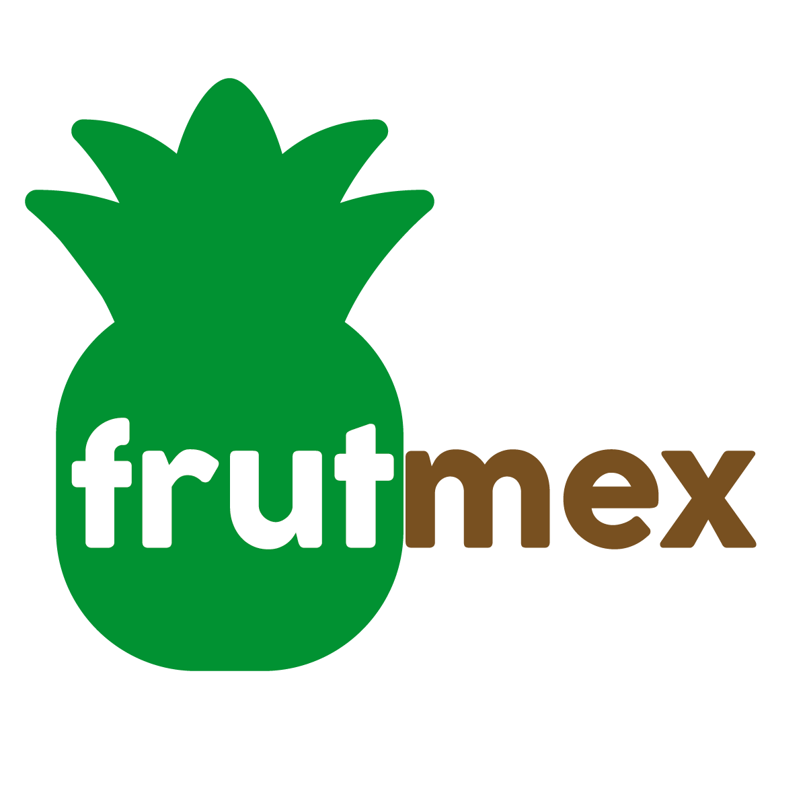
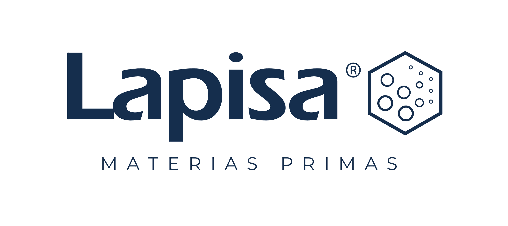
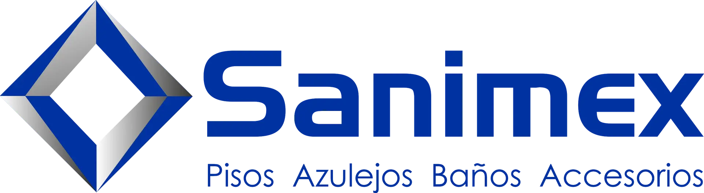
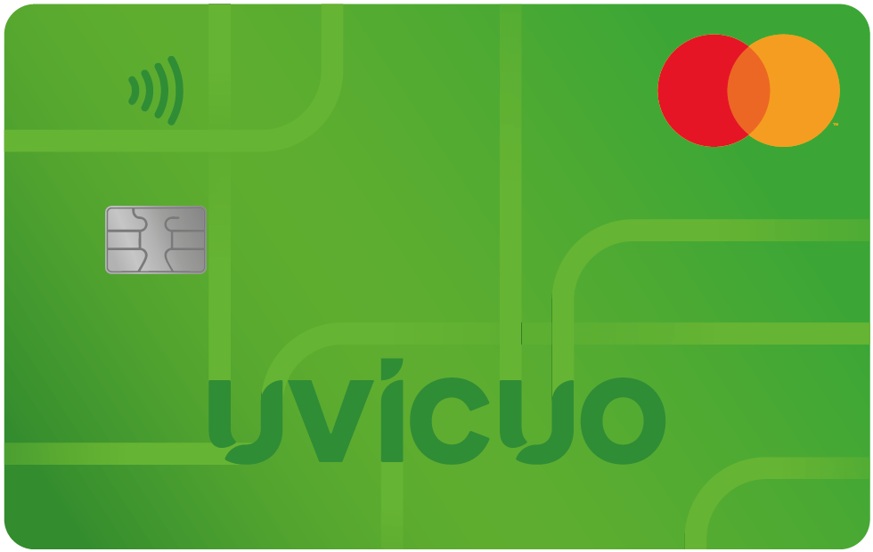

Flota
~450
Unidades · cobertura nacional
 ×
ASAMAZ
×
ASAMAZ
Documento preparado para Miguel Ángel Hernández, Elizabeth Osuna y el equipo ejecutivo de ASAMAZ después de lo que conversamos sobre el proceso de casetas.
//UV-033/2026Lo que vimos en su proceso de casetas y por qué les conviene escucharnos.
Peajes sin conciliar, comisión de red cerrada en combustible foráneo, viáticos y efectivo en ruta.
Capacidades por categoría, cómo encajamos con su telepeaje, su monedero de combustible y su ERP in-house.
Una transportista nacional comparable + portfolio de clientes que ya pasaron por este diagnóstico.
Retorno esperado, próximos pasos, preguntas en directo. Más tiempo aquí porque la decisión es de Dirección.
//UV-033/2026
Mastercard como solución Fleet para LatAm. TeleVía en la red de peaje.
Respaldados también por 468 Capital · 6 Degrees Capital · Numundo Ventures · 17Sigma.
+50 flotas · de 200 a 2,000+ unidades






Pago por uso recurrente, sin comisión sobre el gasto recuperado.
APIs abiertas — su equipo de TI las consume desde el sistema que ya tienen.


 + otros
+ otros
 //UV-033/2026
//UV-033/2026No es ineficiencia ni descuido del equipo. El proceso está documentado y se ejecuta sin falla. La fuga es estructural al modelo del proveedor.
Conciliaciones a mano que nadie revisa. Cobros de TAG, facturas de casetas y comprobaciones que se vuelven costo aceptado.
La información llega días tarde. Cuando se detecta el cobro doble o la factura perdida ya pasó — sin alertas en tiempo real.
Un proveedor por categoría — telepeaje, monedero, viáticos. Cada uno cobra comisión, ninguno ve el sistema completo.
//UV-033/2026Sobre su gasto en telepeaje de ~$48M MXN al año, lo que vemos en operaciones de su tamaño es entre 5% y 9% recuperable en cobros que nadie cruza contra la ruta real.
La cifra exacta se construye con tres meses de su estado de cuenta TAG. El rango lo apostamos hoy.
Cobros dobles, ejes mal cobrados, casetas de gobierno cuyas facturas se pierden en el portal de cinco días. El cruce manual contra GPS y ruta es inviable a 500 unidades.
El autoconsumo del grupo no carga sobreprecio. El margen está en el combustible foráneo del monedero: comisión de red cerrada y sin visibilidad de precio por estación en ruta.
Un auxiliar persigue folios mes a mes y el cierre tarda hasta cinco días. Cada ticket sin factura es deducibilidad que se pierde.
Saldo prefondeado al monedero que no genera rendimiento, más deducibilidad adicional recuperable. Se confirma al revisar tres meses de facturación.
//UV-033/2026Manualidad → Automatización · Control reactivo → Tiempo real con IA · Fragmentación → Centralización.


Operadores no descargan apps. Comprobación, autorización, alertas y soporte por chat. Una sola capa para toda la flota — diseñada para alta rotación.
//UV-033/2026Uvicuo lee del mundo físico — su ERP in-house, su telemetría Samsara y las concesionarias de telepeaje — y ejecuta controles sobre sus medios de pago actuales sin reemplazarlos. Sí, emitimos una tarjeta Mastercard, pero es un instrumento más que el software opera — igual que la línea de crédito o el efectivo en ruta.
Su capital se inmoviliza en saldo, y cobran comisión sobre el gasto.
Eso lo cubre cualquier tarjeta corporativa moderna.
Eso lo cubre cualquier banco. Nosotros emitimos una, sí — pero es un instrumento que el software opera, decide y reconcilia automáticamente con su ERP.
La capa operativa de sus finanzas en ruta — donde todo inicia con un viaje o un plan de gastos.
Uvicuo lee de su operación y ejecuta sobre sus medios de pago. Compatible con su ERP in-house y sistemas de terceros — su equipo integra nuestras APIs sin migrar nada.
WhatsApp
Tarjeta corp.
Su ERP in-house sigue siendo el cerebro. Uvicuo es la capa financiera y operativa que se conecta a él — sin renegociar ni migrar lo que ya tienen.
Si su operación tiene flota y gastos operativos en ruta — combustible, peajes, viáticos, efectivo — esto le hace sentido. Si es 100% oficina, no.
//UV-033/2026
Lo que más me sorprendió no fue el dinero.
Fue saber que llevábamos cuatro años pagando de más y el estado de cuenta nunca nos lo dijo.


Cada uno de estos pasó por el mismo diagnóstico. El siguiente paso para ASAMAZ está en la slide siguiente.
//UV-033/2026Las tres palancas con cifra dura · escenario conservador · ~3% del OPEX
Tres palancas + parte de tesorería y fiscal · ~4.5% del OPEX
Cinco palancas confirmadas en diagnóstico · ~6% del OPEX
$14 a 30 mil MXN por unidad/año, ponderado entre el peso del peaje y el combustible foráneo por unidad. Aplicado a las ~500 unidades de ASAMAZ.
El modelo comercial vive en el documento de diagnóstico. Lo compartimos cuando tenga sentido seguir — incluye garantía de 3% mínimo o no facturamos.
//UV-033/2026Con Miguel Ángel, Elizabeth y el equipo que ustedes convoquen — Contabilidad y Combustible. Iker Haro, CEO de Uvicuo, se suma personalmente. ASAMAZ es una de las pocas cuentas que tratamos como estratégicas este trimestre.
Presenta el rango específico para su operación, responde preguntas en directo y deja una sola decisión sobre la mesa. Sin documentos adicionales — este deck es el material.